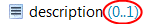
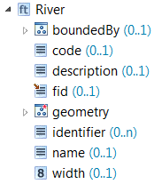
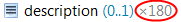
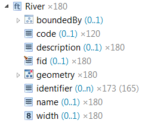

Schema elements are displayed in a uniform way throughout the application. Following is a detailed explanation what the concrete representation of a schema element stands for.
Schema elements are classified according to their nature, the icon displayed for a schema element represents that classification.
| A type defined in the schema. | |
| An abstract type definition, for which there may not be any data instances. | |
| Certain types are classified as Feature Types, these are the main type imported from a Shapefile and types from GML application schemas that extend the GML AbstractFeatureType. | |
| Feature Types that are abstract. |
| Normal group containing a set of properties. | |
| Choice group, where only one of the specified properties is allowed as a child. |
| String property | |
| Numeric property | |
| Geometry property | |
| Other (complex) property |
On top of the classification icon, additional information may be provided through a small overlay image augmenting the icon.
| A red asterisk marks properties that are mandatory, i.e.
they occur exactly once and must have a value (and the value may not
be null). Please note that if the parent of such a property is a choice () the choice takes precedence, i.e. only one of its children may be present in an object, but the child that is present may still not hold a null value if marked with a red asterisk. |
|
| A small brown error in the top left corner marks a property from a XML schema as being defined as an XML attribute. | |
| A property that is deemed to hold the main geometry of a type is marked with a small green triangle. Per type, you can set one property as the default geometry property. This property is then used when retrieving geometries for display in the map. |
If the name of a schema element is displayed in brackets, this indicates that the element represents a context defined on the original schema element. Depending on the nature of the context, a description may be displayed (brown colored text).
| Condition context on a type, limiting associated mappings to source instances matching the condition. |
| Condition context on a property, limiting associated mappings to property values matching the condition. |
| Index context - only the property value at the given zero-based index is used. In this example the element represents the first value of the name property. |
| Instance context - represents an additional instance of a property. |
Next to the property name you usually get the information about a property's cardinality. It consists of two values enclosed in brackets - the first value is the minimum, the second the maximum occurrence.

The value n represents an unbounded maximum occurrence. If there is no information about the cardinality displayed, this means that a property occurs exactly once.
So for instance in the example below, the property geometry must be present in every River instance, while identifier (0..n) may occur any number of times and all other properties, like code (0..1) or name (0..1) may be present but are optional.

If data is present in the application for the schema, additionally information about how the schema elements are populated in the data may be displayed. It is prefixed with a multiplication sign and states the overall count of instances of the respective type or values of the respective property.

If there is a second value in brackets, it states how many different parents there are for this property. If this value is not displayed, this means the number of parents is the same as the overall value count for the property.
In the example below, there are 180 instances of River. All of
those rivers have a description, but only two thirds (120) have
an associated code.
There are 173 values for the
identifier property, but only in 165
Rivers - meaning there are some Rivers with more than
one identifier, while 15 have none.
